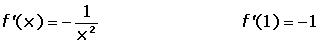

Tangent Problems
1Calculate the points where the tangent to the curve y = x3 − 3x2 − 9x + 5 is parallel to the x-axis.
2A tangent with a slope of 3 and which passes through the point (0, −2) has been drawn on the curve y= x3. Find the point of contact between the function and the tangent.
3Find the points on the curve f(x) = x4 + 7x3 + 13x2 + x + 1, for which the tangent makes an angle of 45° with the x-axis.
4Given the function f(x) = tan x, find the angle between the tangent line at the origin of f(x) with the horizontal axis.
5Calculate the equation of the tangent and normal lines for the curve f(x) = ln tan 2x, at the point where the x-coordinate is: x = π/8.
6Find the coefficients of the equation y = ax2 + bx + c, knowing that its graph passes through (0, 3) and (2, 1), and at the second point, its tangent has a slope of 3.
7The graph of the function y = ax2 + bx + c passes through the points (2, 3) and (3, 13) and the tangent to the curve with an x-coordinate of 1 is parallel to the bisector of the first quadrant. Find the numerical value of a, b and c.
8Given the function f(x) = ax3 + bx2 + cx + d. Determine the value of a, b, c and d knowing that the curve passes through points (−1, 2) (2, 3), and that the tangents at the points on the curve with x-coordinates of 1 and −2 are parallel to the x-axis.
9At what point of the curve y = ln x, is its tangent parallel to the line that joins the points (1, 0) and (e, 1)?
10Determine the values of b, for which the tangents to the curve of the function f(x) = b2x3 + bx2 + 3x + 9 at x = 1 and x = 2 are parallel.
11Given the equation 9x2 + y2 = 18, find the equation of the tangent line that is parallel to the line of equation 3x − y + 7 = 0.
12Find the area of the triangle determined by the coordinate axes and the tangent to the curve xy = 1 at x = 1.
1
Calculate the points where the tangent to the curve y = x3 − 3x2 − 9x + 5 is parallel to the x-axis.
y' = 3x2 − 6x − 9; x2 − 2x − 3 = 0 (simplifying for 3)
x1 = 3 y1 = −22
x2 = −1y2 = 10
A(3, −22) B(−1, 10)
2
A tangent with a slope of 3 and which passes through the point (0, −2) has been drawn on the curve y= x3. Find the point of contact between the function and the tangent.
Point of contact: (a, f(a)).
f'(x)= 3x2f'(a)= 3a2
3a2 = 3a = ±1
The equations of the tangent lines are:
a = 1 f(a) = 1
y − 1 = 3(x − 1) y = 3x − 2
a = −1 f(a) = −1
y + 1 = 3(x + 1) y = 3x + 2
The point (0, −2) belongs to the straight line y = 3x − 2.
So, the point of tangency is (1, 1) .
3
Find the points on the curve f(x) = x4 + 7x3 + 13x2 + x + 1, for which the tangent makes an angle of 45° with the x-axis.
m = 1
f'(x) = 4x3 + 21x2 + 26x + 1
4x3 + 21x2 + 26x + 1 = 1
x = 0 x = −2 x = 13/4
P(0, 4) Q(−2, 4) R(13/4, 1621/256)
4
Given the function f(x) = tan x, find the angle between the tangent line at the origin of f(x) with the horizontal axis.
f′(x) = 1 + tan² x f′(0) = 1 = m
y = x
α = arc tan 1 = 45º
5
Calculate the equation of the tangent and normal lines for the curve f(x) = ln tan 2x, at the point where the x-coordinate is: x = π/8.

Equation of the tangent:
Equation of the normal:

6
Find the coefficients of the equation y = ax2 + bx + c, knowing that its graph passes through (0, 3) and (2, 1), and at the second point, its tangent has a slope of 3.
(0, 3) 3 = c
(2, 1) 1= 4a + 2b + c
y' = 2ax + b 3 = 4a + b
Solving the system:
a = 2 b = −5 c = 3
7
The graph of the function y = ax2 + bx + c passes through the points (2, 3) and (3, 13). The tangent to the curve with an x-coordinate of 1 is parallel to the bisector of the first quadrant. Find the numerical value of a, b and c.
(2, 3) 3 = 4a + 2b + c
(3, 13)13 = 9a + 3b +c
y' = 2ax + b 1 = 2a + b
Solve the system:
a = 3 b = −5 c =1
8
Given the function f(x) = ax3 + bx2 + cx + d. Determine the value of a, b, c and d knowing that the curve passes through points (−1, 2) (2, 3), and that the tangents at the points on the curve with x-coordinates of 1 and −2 are parallel to the x-axis.
f(−1) = 2 −a + b − c + d = 2
f(2) = 3 8a + 4b + 2c + d = 3
f′(−1) = 0 3a + 2b + c = 0
f′(2) = 0 12a − 4b + c = 0
a = − 2/9 b = − 1/3 c = 4/3 d = 31/9
9
At what point of the curve y = ln x, is its tangent parallel to the line that joins the points (1, 0) and (e, 1)?


10
Determine the values of b, for which the tangents to the curve of the function f(x) = b2x3 + bx2 + 3x + 9 at x = 1 and x = 2 are parallel.
For both tangent lines to be parallel, the derivatives at x = 1 and x = 2 must be equal.
f'(1) = f'(2)
f'(x) = 3b2x2 + 2bx + 3
f'(1) = 3b2 + 2b + 3
f'(2) = 12b2 + 4b + 3
3b2 + 2b + 3 = 12b2 + 4b + 3
9b2 + 2b = 0
b = 0 b = −2/9
11
Given the equation 9x2 + y2 = 18, find the equation of the tangent line that is parallel to the line of equation 3x − y + 7 = 0.
Point of contact: (a, b)
y = 3x + 7 m = 3
After implicitly differentiating there is:


12
Find the area of the triangle determined by the coordinate axes and the tangent to the curve xy = 1 at x = 1.
